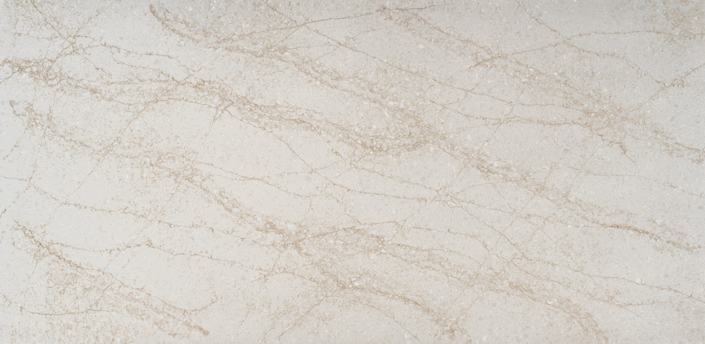

Global craftsmanship, Indian design sensibility. Surfaces born on Breton technology — engineered to be felt, not just seen.
Discover curated collections crafted for timeless interiors.
Emerging from Marudhar Quartz's decades of heritage supplying North America, the UK and Australia.
Surfaces that pair durability with design — made to be felt, not just seen.
Italian-built precision presses deliver consistent colour, density and strength, slab after slab.
Bringing world-class engineered stone home to India, and to projects worldwide.
Beautiful surfaces crafted for every style of living and working.
Mohs hardness 6.5–7.5 shrugs off everyday knocks and abrasion.
Rated Class A for surface burning; withstands everyday kitchen heat.
Spills wipe away without soaking in — coffee, wine and oil included.
Sealed for life — never needs resealing, unlike natural stone.
NSF certified for food-contact use — safe where you prep and eat.
A soft cloth and mild detergent keep it pristine for a lifetime.
Every slab is engineered with innovation, craftsmanship, and uncompromising quality.
Premium quartz aggregates and resins, sourced to exacting standards.
Exact blends measured for consistent colour, density and strength.
Italian vibro-compaction presses form flawless, uniform slabs.
Every slab tested against international EN and ASTM benchmarks.
Polished or honed to a refined, tactile finish.
Carefully packed and shipped to projects across the world.
From our state-of-the-art facility at Mahindra World City, Jaipur, Artizia surfaces reach homes, showrooms and landmark projects across the globe — carrying Indian craftsmanship to the world.
Connect with our experts and discover premium engineered quartz crafted for projects that inspire.